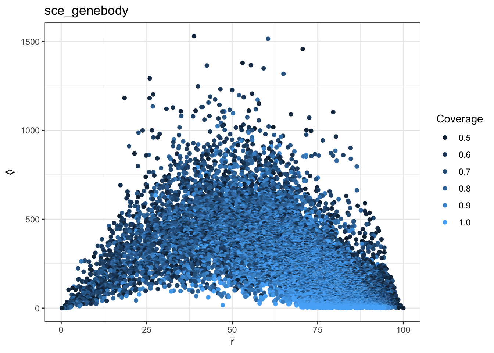
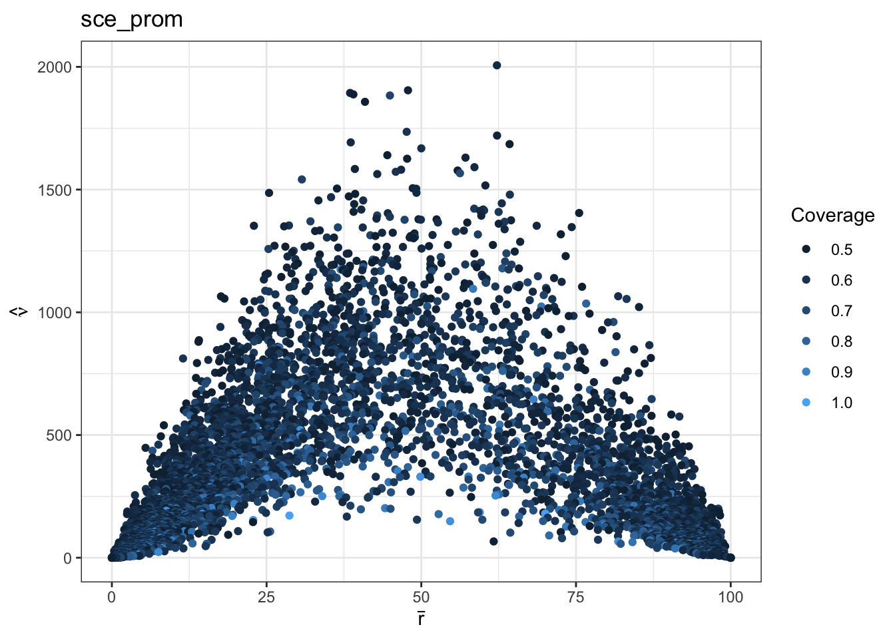
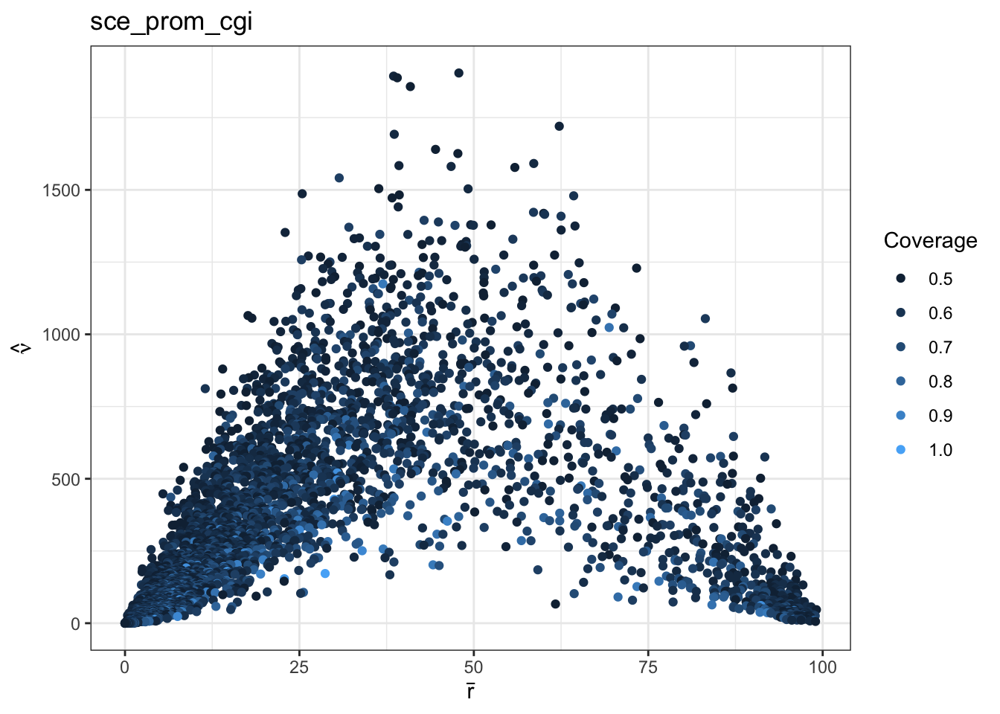
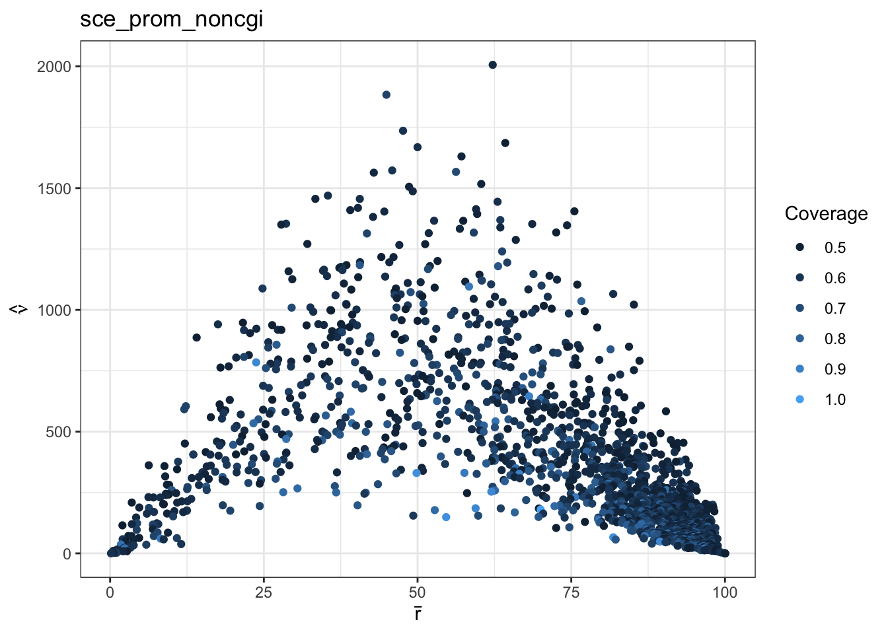
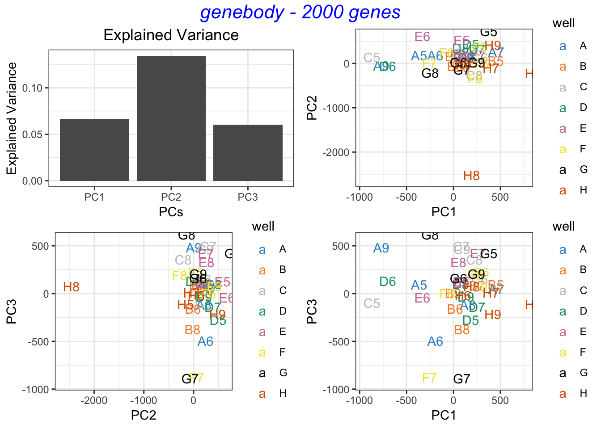
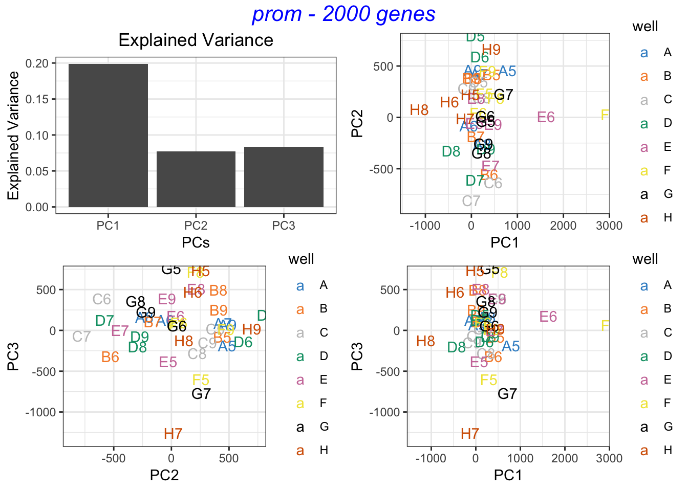
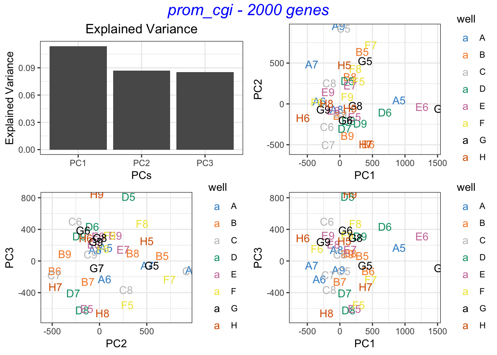
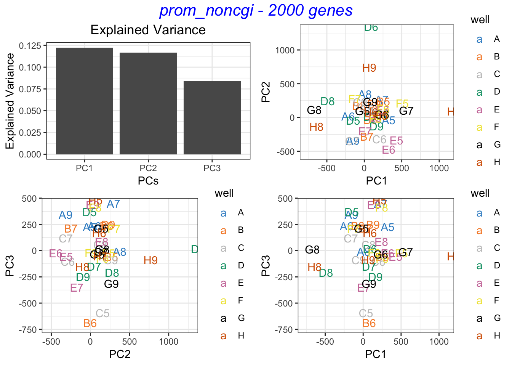

Chapter 2 scBS-seq Data
40 cells matching RNA-seq data
2.1 Data
## load the methylation data
met = fread(io$met_1bp_out)
unique(met$anno) ## all annotations
## look at sample names
head(unique(met$sample), 2)
## keep only the well number as the sample name
## the following code is fast but only works if the well names are 2 character long and at the beginning on the string
## if wells such as A12 are present (with 3 or more characters) the function name.cells.by.wells should be called
met$sample = substr(met$sample,0,2)
length(unique(met$sample)) ## 40
met =met[anno!="intergenic"] ## #TODO drop intergenic for now2.2 Create sce
## from each annotation (genebody, promoter etc) in methylation file, create a sce object
## which includes the weighted mean methylation rate (rbar) and weighted methylation variance (vhat)
## plus the coverage of the gene in rowData(sce), filter by coverage and record the changes in dim(sce)
## after filtering in metadata(sce)
system.time({ ## 19 sec
for (i in unique(met$anno) ) {
assign(paste0("sce_",i), met_sce(met=met, annot = i, cov = params$cov.cutoff))
}
})load('RData/met_sces.RData')2.3 Summary
## get all annotations
annots = grep("sce_", ls(), value=TRUE)
## tabulate metadata
lapply(annots, function(x){metadata(get(x))$gene_stats}) %>%
lapply(., cbind) %>% as.data.frame() %>% kableExtra::kable(., caption = "Number of genes in each dataset before and after filtering by coverage")2.4 Variance
rv_plot = function(sce = sce_genebody, annot = "Gene Body Methylation"){
rowdat = sce %>% rowData() %>% as.data.frame()
ggplot(rowdat, aes(x=rbar, y=vhat, col = cov)) +
geom_point() + guides(col=guide_legend("Coverage")) +
labs(x=TeX("$\\bar{r}$"), y=TeX("$\\hat{\\nu}$"),title = annot)
}## plot all vhat ~ rbar
par(mfrow=c(ceiling(length(annots)/2),2))
lapply(annots, function(x){rv_plot(get(x), x)})
2.5 Dimension reduction
Because of large number of NA’s, dimension reduction cannot be trusted for now.
## pca function
## sce: sce with 'rates' assay
## ncomp: integer, number of comps to get
## hvgs: NULL or number of hvgs to keep based on rowData(sce)$vhat
pca_met = function(sce = "sce_genebody", ncomp = 2, n_hvgs = NULL){
rates = assay(get(sce), "rates")
if (!is.null(n_hvgs)){
if(n_hvgs>=dim(get(sce))[1]){
message("number of genes <= hvgs; all genes used")
} else{
rates = rates[1:n_hvgs,]
}
}
out = pca(t(rates), ncomp = ncomp)
out$anno = gsub("sce_","", sce)
return(out)
}n_hvgs = params$hvgs_pca
## maximum number of components reaches for some comps
system.time({ ## 562 sec for ncomp=3, nhvgs =2000
pca_out = lapply(annots, function(x){pca_met(x,ncomp = 3, n_hvgs =n_hvgs)})
save(pca_out, file="RData/pca_out.RData")
})load("RData/pca_out.RData")lapply(pca_out, function(x){pca.grid(x, top = x$anno, point.label = TRUE)}) ## Weighted PCA?